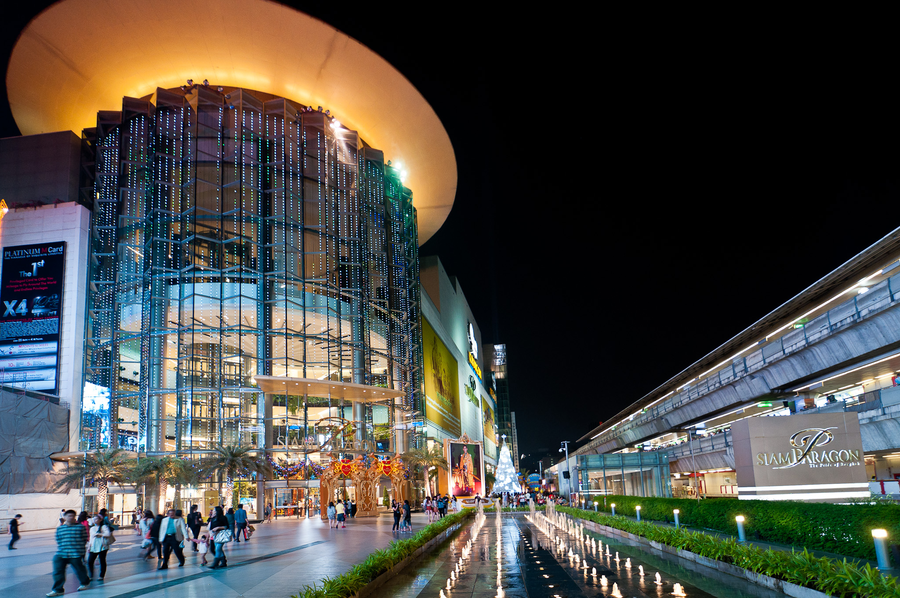
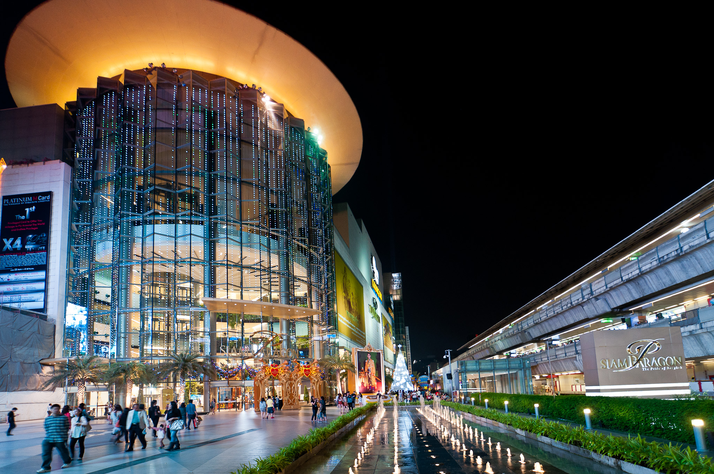

Bangkok: The heart of Thailand
Have you ever visited Bangkok before? Bangkok or Krung Thep Maha
Nakhon comes from many centuries of history with many transformations.
When you come here, you will find a nice beautiful places to visit such as The Temple of the Emerald Buddha
(Wat Phra Kaew), Wat Arun, Mahanakhon Building, Siam Paragon, etc.
Many places have their own historical traces to let you find, for example, Wat Arun was built in 1656
(Ayutthaya Kingdom).
Many old kings came here and only lived here at once. So, this place become a major historical data of
Thailand.
One of the most popular malls in Thailand "Siam Paragon". If you travel to Bangkok you should
go to Siam Paragon at once for a nice experience.
You will encourage a lot of people there (think about Shibuya in Japan). There are a lot of tourists and
young people who come shopping or walking around there.
You will see what fashion looks like in Thailand by coming to this place.
Traveling at night? Afraid to can't find any transportation? We have tuktuk here, a motorized with
3 wheels that can carry passengers around Bangkok.
When you ride it, you will find the amazing experience of traveling in Bangkok. You even can go to China
Town, one of the most popular places to visit.